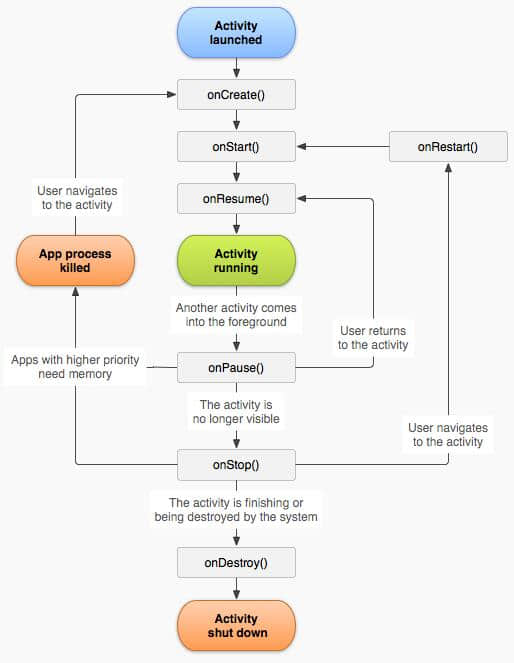

Activity 专讲
作为 Android 开发中的四大组件之一以及 Android 设备与用户交互的媒介， Activity 的相关用法应作为 Android 开发入门学习的重要知识点。
1 注册 Activity
在创建HelloWord 工程时， AndroidStudio 会生成一个 AndroidManifest.xml 文件。并添加了类似于下面的代码。
1 | <activity android:name=".MainActivity"> |
AndroidManifest.xml 文件，顾名思义是一个清单文件，包含四大组件的注册、权限声明、应用配置等。上述代码中标签 activity 表示注册一个名为 MainActivity 的 Activity。
intent-filter 标签作用暂不讲解，只需要知道用在这里的意思是这个 Activity 是程序的入口，它不是必须存在的。注册 Activity 最简单的代码只需一行。
1 | <activity android:name=".MainActivity"/> |
android:name 使用的是相对路径，拼接上 package 即是完整的类路径。使用完整路径如下。
1 | <activity android:name="com.flueky.demo.MainActivity"/> |
2 Activity 跳转
当一个应用存在多个页面时，A 页面需要跳转到 B 页面，实际是 A Activity 切换到 B Activity 。两个 Activity 之间切换的代码主要有 3 个。
2.1 startActivity
跳转 Activity 的最基本方法，扩展方法如下。
1 | /** |
下面演示了 startActivity(Intent , Bundle) 和 startActivities(Intent[]) 的使用。 注意 区分 data 和 options 的类型和用途。
1 | // 跳转一个 Activity |
2.2 startActivityForResult
这个方法是对 startActivity 的补充。同样具有上面四个重载和关联方法。
不同处在于，这个方法需要和 setResult 方法关联使用。 A activity 执行 startActivityForResult 方法显示 B activity ，需要 B activity 在 finish 之前执行 setResult 方法。而后在 A activity 重写 void onActivityResult(int requestCode, int resultCode, Intent data) 方法，处理 B activity 回传过来的标记或数据。
虽然这种 Activity 之间数据交互的方式已经被 EventBus 取代，但是入门 Android 开发仍然需要掌握。
1 |
|
输出日志：
com.flueky.demo D/intent: jump: Intent { cmp=com.flueky.demo/.ThirdActivity } 11794772
com.flueky.demo D/intent: finish: Intent { cmp=com.flueky.demo/.ThirdActivity } 132627786
com.flueky.demo D/intent: onActivityResult: Intent { cmp=com.flueky.demo/.ThirdActivity } 177493179
com.flueky.demo E/intent: onActivityResult: 123 111
通过分析日志看出：三处的 intent 实例不是同一个对象，但却是相同的内容。
2.3 finish
由于 Android 中对 Activity 的管理是通过栈的方式。所以 A activity 到 B activity 会将 B activity 入栈，A activity 在 B 的下层。如需要再从 B activity 回到 A activity。可以通过 startActivity 方式，也可以直接 通过 finish 方式销毁 B activity 并出栈，使 A activity 回到栈顶即可。
具体使用 startActivity 还是 finish 视使用场景。但是在学习了后面的启动模式后，可以通过指定启动模式，实现 startActivity 和 finish 相同的效果。
finish 方法使用很简单。
1 | public void back(View v){ |
3 生命周期
如图，是官方提供的 Android 生命周期执行的流程图。一共 七个生命周期方法。
- onCreate
Activity 实例在创建后执行此方法。
执行 setContentView 将 Activity 与 layout 资源绑定。
- onStart
Activity 创建后，显示在页面时执行此方法。
- onResume
Activity 显示在页面后可以响应用户点击事件时执行此方法。
- onPause
Activity 切换到后台时，执行此方法，此时不再响应用户事件。ss
- onStop
Activity 对用户不可见时，执行此方法。
- onDestory
Activity 实例被销毁时，执行此方法。
- onRestart
当 Activity 进入后台没有被销毁时，再次显示此 Activity 会执行此方法。
验证生命周期方法执行结果如下：
启动程序，进入 MainActivity
2019-02-24 14:35:32.324 27958-27958/com.flueky.demo D/MainActivity: heheda onCreate
2019-02-24 14:35:32.491 27958-27958/com.flueky.demo D/MainActivity: heheda Start
2019-02-24 14:35:32.500 27958-27958/com.flueky.demo D/MainActivity: heheda Resume
startActivity，进入 ThirdActivity
2019-02-24 14:35:42.407 27958-27958/com.flueky.demo D/MainActivity: heheda Pause
2019-02-24 14:35:42.440 27958-27958/com.flueky.demo D/ThirdActivity: heheda onCreate
2019-02-24 14:35:42.456 27958-27958/com.flueky.demo D/ThirdActivity: heheda Start
2019-02-24 14:35:42.457 27958-27958/com.flueky.demo D/ThirdActivity: heheda Resume
2019-02-24 14:35:42.962 27958-27958/com.flueky.demo D/MainActivity: heheda Stop
finish ，回到 MainActivity
2019-02-24 14:35:45.921 27958-27958/com.flueky.demo D/ThirdActivity: heheda Pause
2019-02-24 14:35:45.938 27958-27958/com.flueky.demo D/MainActivity: heheda Restart
2019-02-24 14:35:45.939 27958-27958/com.flueky.demo D/MainActivity: heheda Start
2019-02-24 14:35:45.939 27958-27958/com.flueky.demo D/MainActivity: heheda Resume
2019-02-24 14:35:46.436 27958-27958/com.flueky.demo D/ThirdActivity: heheda Stop
2019-02-24 14:35:46.436 27958-27958/com.flueky.demo D/ThirdActivity: heheda Destroy
按下home键 ，回到 手机桌面
2019-02-24 14:35:50.950 27958-27958/com.flueky.demo D/MainActivity: heheda Pause
2019-02-24 14:35:51.007 27958-27958/com.flueky.demo D/MainActivity: heheda Stop
再次进入程序 ，显示 MainActivity
2019-02-24 14:35:58.095 27958-27958/com.flueky.demo D/MainActivity: heheda Restart
2019-02-24 14:35:58.100 27958-27958/com.flueky.demo D/MainActivity: heheda Start
2019-02-24 14:35:58.101 27958-27958/com.flueky.demo D/MainActivity: heheda Resume
3 添加跳转动画
给 Activity 添加跳转动画，已知有三种实现方式。
startActivity时指定 options 参数。见上。overridePendingTransition指定区间动画。API 5 支持。- 重写 AppTheme ，设置动画。以后在动画章节会讲。
1 |
|
重写上面两个方法后，在每次 startActivity 或 finish 方法执行时，会自动添加动画效果。
4 启动模式
- standard
每次执行 startActivity 方法，都会新生成一个 Activity 实例并入栈。
- singleTop
如果 A activity 已经在栈顶，再次 start A activity 时。不重新创建 A activity 实例，复用之前的 A activity 实例。
生命周期方法：A.onPause->A.onNewIntent->A.onResume
- singleTask
特殊情况具备 singleTop 的属性。一般情况下，如果 A activity 实例在栈中，当前显示 B activity 即栈顶是 B activity 实例。B activity start A activity 时，B activity 实例出栈。A activity 实例在栈顶。
生命周期方法：B.onPause->A.onNewIntent->A.onRestart->A.onStart->A.onResume->B.onStop->B.onDestory
- singleInstance
具备 singleTop 的属性。但是，activity 实例会单独存在于一个栈中。
觉得有用？那打赏一个呗。[去打赏](/donate/)